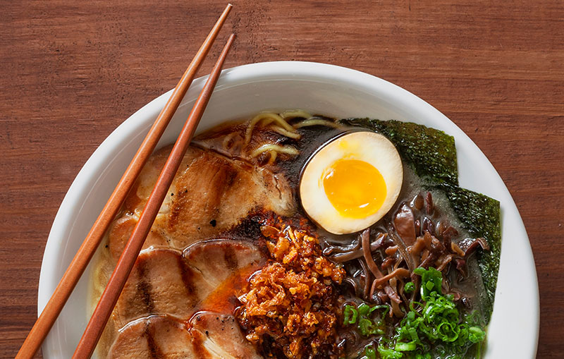
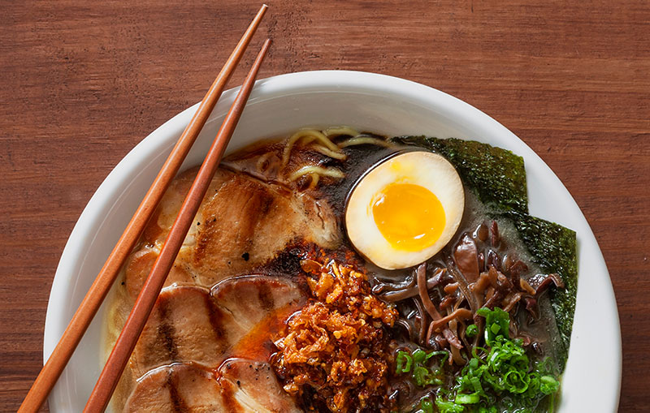

OUR STORY
The Michi story is a wild ride to say the last. when we started is 2012 with a food truck, we couldn't have imagined being named the best. Ramen in Austin by our fans two short years leter. in a town
long dominated by enchiladas and burger, we've loved introducing Austinies and Texans to our favorite food.